我的简历

我的简历



郝兴来

年龄:26岁
籍贯:湖北
毕业院校:福建闽江学院(本科)
期望职业:前端工程师
期望薪资：10-15k


- 1.100%还原设计图；
- 2.掌握HTML5/CSS3/Javascript及相关插件；
- 3.了解HTTP协议，熟练使用AJAX/JSON；
- 4.熟练使用Git/Gulp/NPM；
- 5.了解NodeJS,熟悉前端MVC框架:AngularJS。

- 偶尔看看书
- 偶尔哼哼歌
- 别让我停下来
- NO.1
- 14年7月-16年8月
- 福建润商网络
- 前端工程师
- NO.2
- 14年3-6月
- 福建城市猎人
- 前端助理
- 喜欢CSS动画
- 偶尔敲点小游戏
- 设计+PS技术合格
- 喜欢钻技术尖


 18571816011
18571816011 18571816011@163.com
18571816011@163.com xinglai-orange.github.io/myResume/
xinglai-orange.github.io/myResume/